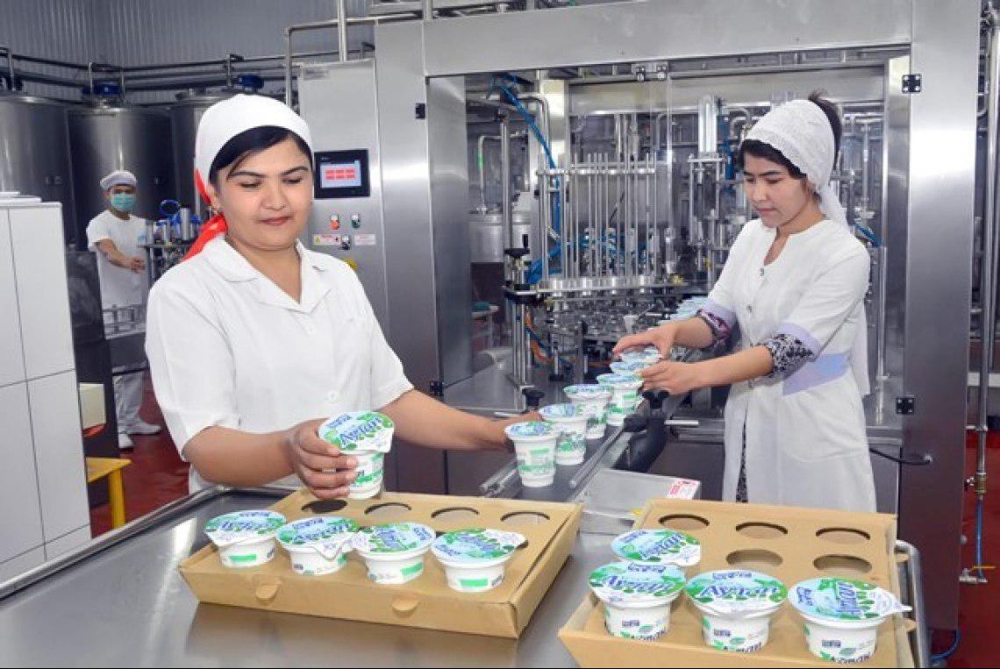

""Kambag‘allikdan farovonlikka" dasturi"
Oila daromadini oshirish uchun tayyor biznes loyihalar va asbob-uskunalar berish tizimi yo'lga qo'yildi
O‘zbekistonda 2026-yilda "Kambag‘allikdan farovonlik sari" dasturi yangi va yanada keng ko‘lamli bosqichga ko‘tarildi. Bu yil mamlakatimizda "Mahallani rivojlantirish va jamiyat farovonligini oshirish yili" deb e’lon qilinishi bilan dasturning ijro mexanizmlari tubdan o‘zgardi. 2026-yilgi maqsad — kambag‘allik va ishsizlik darajasini 4,5 foizgacha tushirish hamda 181 mingdan ortiq oilani kambag‘allikdan butunlay chiqarishdir.
Tizimning asosiy bo‘g‘ini sifatida "Mahalla yettiligi" (mahalla raisi, hokim yordamchisi, yoshlar yetakchisi, xotin-qizlar faoli va boshqalar) har bir xonadonga kirib, "oilaning portreti"ni shakllantirmoqda. Bu jarayonda oilalarga shunchaki pul berish emas, balki ularni daromadli qilish uchun tayyor biznes loyihalar va zarur asbob-uskunalar berish tizimi asosiy drayverga aylandi. Xususan, tadbirkorlik boshlamoqchi bo‘lgan fuqarolarga qiymati 30 million so‘mgacha bo‘lgan kichik ishlab chiqarish uskunalari, ko‘chma do‘konlar (food truck), motoroller va skuterlar 5 yil muddatga, garovsiz va foizsiz qarz sifatida bo‘lib-bo‘lib to‘lash sharti bilan berilmoqda.
Shuningdek, o‘zini o‘zi band qilganlar uchun asbob-uskunalar va xizmat ko‘rsatish jihozlarini sotib olishga Bandlik jamg‘armasi hisobidan subsidiya va imtiyozli kreditlar ajratish davom etmoqda. "Teng imkon — inklyuziv bandlik" loyihasi doirasida esa nogironligi bo‘lgan shaxslarga ham 30 million so‘mgacha foizsiz ssudalar berilib, ularning bandligini ta’minlashga alohida e’tibor qaratilmoqda. Oilalar uchun kasanachilik, hunarmandchilik va issiqxona xo‘jaligi bo‘yicha tayyor biznes paketlar taqdim etilmoqda. Bunda "Hokim yordamchisi" tizimi orqali oilaning ehtiyoji o‘rganilib, ularga eng mos keladigan loyiha tanlanadi va uskuna yetkazib beriladi. Masalan, tumanlardagi ixtisoslashuvga qarab, ayrim mahallalarda parrandachilik yoki tikuvchilik, boshqalarida esa meva-sabzavotni qayta ishlash texnikalari bepul yoki imtiyozli shartlarda taqdim etilmoqda.
2026-yilda ushbu tizim "Kambag‘al oilalar uchun yetti imkoniyat va mas’uliyat" tamoyili asosida ishlamoqda, ya’ni davlat uskuna va sharoit beradi, oila esa o‘z mehnat bilan daromadini oshirish mas’uliyatini oladi. Hozirda respublika bo‘yicha "kambag‘allikdan xoli" mahallalar sonini 3,5 mingtaga yetkazish bo‘yicha faol ishlar olib borilmoqda.

2026-yilgi ijtimoiy himoya tizimining eng katta yutug‘i — bu "Ijtimoiy keys-menejment" uslubiga to‘liq o‘tilganidir. Ilgari ijtimoiy yordam faqat pul berish (nafaqa) bilan cheklangan bo‘lsa, hozirgi raqamli tizim insonni og‘ir vaziyatdan olib chiqishning kompleks yechimini taklif qiladi. "Inson" markazlaridagi ijtimoiy xodimlar planshetlar orqali real vaqt rejimida har bir xonadonning "ijtimoiy portreti"ni ko‘rib turadi. Masalan, tizim oiladagi ishsizlikni aniqlasa, u faqat nafaqa tayinlash bilan to‘xtamaydi, balki bandlik bazasiga avtomatik so‘rov yuborib, o‘sha shaxsga uning yashash joyiga yaqin bo‘lgan bo‘sh ish o‘rinlarini taklif qiladi yoki qayta tayyorlash kurslariga yo‘naltiradi.
Byurokratiyaning tugatilgani yana shunda ko‘rinadiki, endi "nogironlikni tasdiqlash" jarayoni ham to‘liq raqamlashgan. Ilgari odamlar tibbiy-mehnat ekspert komissiyalariga (TMEK) oylab qatnagan bo‘lsa, hozirda shifoxona xulosasi elektron bazaga kiritilishi bilan tizimning o‘zi nogironlik guruhini belgilaydi va shu soniyadayoq nogironlik nafaqasi hamda protez-ortopediya buyumlari uchun vaucherlarni rasmiylashtiradi. Hatto talabalarning ijtimoiy stipendiyalari yoki "temir daftar"dagi oilalar farzandlarining shartnoma pullarini to‘lab berish ham inson aralashuvisiz, algoritmlar asosida amalga oshirilmoqda.
Eng qiziq jihati, "Ijtimoiy hamyon" (Social Wallet) texnologiyasi orqali yordam pullari maqsadli sarflanishi nazorat qilinadi. Bu degani, ajratilgan mablag‘lar spirtli ichimliklar yoki qimor kabi ijtimoiy zararli narsalarga sarflanmasligini tizimning o‘zi cheklashi mumkin. Shuningdek, 2026-yilda "Inson" markazlari tomonidan ko‘rsatiladigan xizmatlar ichiga "uyda parvarishlash" xizmati ham raqamli nazoratga olingan: yolg‘iz keksalar va nogironligi bor shaxslarga biriktirilgan xizmatchilarning ishi GPS va mobil ilovalar orqali monitoring qilinadi, bu esa xizmat sifatini 100% kafolatlaydi. Tizim shunchalik aqlliki, u hatto oiladagi zo‘ravonlik xavfini yoki bolaning maktabga bormay qo‘yganini ham bilvosita ma’lumotlar (masalan, maktab davomomati yoki tibbiy murojaatlar) orqali tahlil qilib, ijtimoiy xodimlarga "signal" beradi.